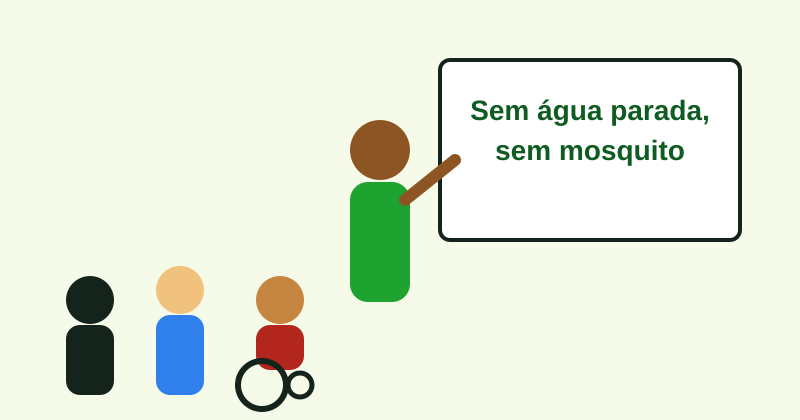
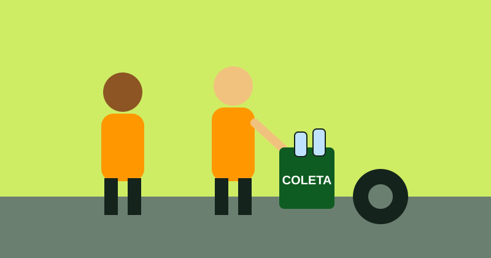

Palestras informativas
Levamos para escolas, praças e associações o que a ciência já sabe: como o mosquito nasce, o que ele transmite e o que cada casa pode fazer.
01 — Apresentação
A EcoAedes é uma organização sem fins lucrativos. Existimos para explicar, em linguagem de calçada, o que o Aedes aegypti faz com uma cidade: falta na escola, fila na unidade de saúde, salário que não entra e, no pior desenlace, um óbito que poderia ter sido evitado.
Atuamos com palestras informativas e ações comunitárias, em parceria com agentes de combate às endemias. Não substituímos o SUS. Caminhamos ao lado de quem já visita as casas.

Levamos para escolas, praças e associações o que a ciência já sabe: como o mosquito nasce, o que ele transmite e o que cada casa pode fazer.
Mutirões de bairro, cartazes e conversas de porta em porta. A dengue se combate melhor quando o quarteirão inteiro participa.
Pneus, garrafas e potes viram criadouro depois da chuva. Recolher esse material corta o ciclo antes do ovo virar adulto.
Os agentes de saúde entram nas casas todos os dias. A EcoAedes caminha junto: explica, registra criadouros e reforça o que o SUS já orienta.

Pelo que lutamos
O mosquito não escolhe bairro, mas a falta de informação e de coleta pesa mais onde a casa já é apertada. Por isso a EcoAedes fala com vizinho, não só com cartaz: o criadouro está no quintal de cada um.
Sustentabilidade
Prevenir dengue, zika e chikungunya diminui casos graves, internações e mortes evitáveis.
Caixa d’água tampada e água armazenada com segurança são, ao mesmo tempo, saneamento e prevenção.
Coleta de resíduos (pneus, garrafas, entulho) e mutirões deixam o bairro mais limpo e com menos criadouros.